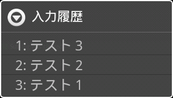
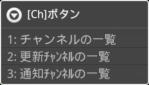

操作方法 - AiCiA
AiCiAメイン画面
AiCiAでIRCサーバに接続した後の操作は、以下のウィンドウやボタン類で行います。
|
画面内ボタンの代わりに、以下のショートカットキーを使うことができます。
|
- ①通知アイコン
-
AiCiA上で重要な事柄（イベント）が発生したとき、ここにアイコンとその内容が表示されます。アイコンは、以下の３種類が表示されます。
メインアイコンAiCiAのIRC接続サービスが実行されている間、常に表示されます。このアイコンをタップすると、AiCiAのメイン画面を表示することができます。
サーバアイコン
（接続中）
サーバアイコン
（切断中）AiCiAが接続を行うIRCサーバ１つにつき、１つのアイコンが表示されます。このアイコンをタップすると、AiCiAでそのサーバのチャンネルを表示することができます。このアイコンで示される内容は、以下の通りです。- サーバに接続しました（Connected）
- IRCサーバに接続したとき、表示されます。
- サーバから切断しました（Disconnected）
- IRCサーバから切断したとき、表示されます。
- サーバ設定が更新されました（Update）
- サーバ接続設定を変更したとき、表示されます。
警告アイコンAiCiAのIRC接続サービスに問題が発生した時、表示されます。このアイコンをタップすると、AiCiAのメイン画面を表示することができます。このアイコンで示される内容は、以下の通りです。- IRCサービス用メモリが不足しています（Low Memory）
- IRC接続サービスを維持するためのメモリ残量が少ないとき、表示されます。不要なアプリケーションを終了するなどの策を講じない場合は、IRC接続サービスがメモリ不足により終了してしまうことがあります。
- ②メインログウィンドウ
-
「現在注目しているチャンネル」の発言を表示します。チャンネル名はウィンドウタイトル部に表示されています。また、発言はこのチャンネルに対して行われます。メインログウィンドウでは、以下の操作を行うことができます。
上下フリック
上下方向キーログウィンドウをスクロールします。 左右フリック
（短距離）「メインログウィンドウで表示しているチャンネル」を１つ前、あるいは次に変更します。 左右フリック
（長距離）「新しい発言があった」次（または前）のチャンネルへ移動します。 タップ
[実行]キーURL部分をタップすると、Webブラウザを起動してそのURLを開きます。 ダブルタップ
ダブルタップ位置ログウィンドウ内の左上部分（右図の青色部）をダブルタップすると、ログ最上部までスクロールします。同様に、右下部分（右図の黄色部）をダブルタップすると、ログ最下部までスクロールします。長押し ウィンドウ内を長押し（ロングタップ）すると、メインログウィンドウで表示しているチャンネルや、そのチャンネルでの発言内容に対して操作を行うダイアログが表示されます。[Alt]+[検索]キー [Ch]ボタンを押すのと同じ動作をします。 [Alt]+[Menu]キー [U]ボタンを押すのと同じ動作をします。 - ③サブログウィンドウ
-
「現在注目しているチャンネル」以外のチャンネルの発言を表示します。サブログウィンドウでは、以下の操作を行うことができます。
上下フリック
上下方向キーログウィンドウをスクロールします。 左右フリック
（短距離）「メインログウィンドウで表示しているチャンネル」を１つ前、あるいは次に変更します。 左右フリック
（長距離）メインログウィンドウで「新しい発言があった」次（または前）のチャンネルへ移動します。 タップ
[実行]キーURL部分をタップすると、Webブラウザを起動してそのURLを開きます。 ダブルタップ
ダブルタップ位置ログウィンドウ内の左上部分（右図の青色部）をダブルタップすると、ログ最上部までスクロールします。同様に、右下部分（右図の黄色部）をダブルタップすると、ログ最下部までスクロールします。長押し ウィンドウ内を長押し（ロングタップ）すると、メインログウィンドウで表示しているチャンネルや、サブログウィンドウ内の発言内容に対して操作を行うダイアログが表示されます。 - ④入力エリア
-
「メインログウィンドウで表示しているチャンネル」へ入力内容を送信し、発言を行います。入力エリアでは、文字入力以外にも以下の操作を行うことができます。
ダブルタップ
上へスワイプ
[Alt]+[Delete]キー
入力履歴過去の発言履歴を参照して、再び入力できるようにします。下へスワイプ
[Shift]+[Enter]キー現在入力中の発言を、送信せずに発言履歴へ登録します。文章入力中に別の文章を入力したくなった時に便利です。- ⑤コマンドボタン
コマンドボタンIRCのチャンネルやサーバに対して命令を発行したり、AiCiAの操作を行ったりするためのボタンです。必要なボタンだけを表示したいときは、「環境設定 - 表示設定 - コマンドボタン」で設定を行います。- [↑]ボタン（前のチャンネル）
-
「メインログウィンドウで表示しているチャンネル」を１つ前のチャンネルに変更します。このボタンでは、以下の操作を行うことができます。
タップ
[実行]キー前のチャンネルへ移動します。 長押し 「新しい発言があった」前のチャンネルへ移動します。 - [Ch]ボタン（チャンネル一覧）
-
チャンネルの一覧をメニューで表示します。チャンネルを選択すると、そのチャンネルをメインログウィンドウで表示します。このボタンでは、以下の操作を行うことができます。
タップ
[実行]キー[チャンネルの一覧]メニューを開きます。 長押し
（ロングタップ）[更新チャンネルの一覧]メニューを開きます。全チャンネルのうち、「新しい発言があった」チャンネルだけが表示されます。長押し（ロングタップ）の動作を[通知チャンネルの一覧]にしたいときは、「環境設定 - 通知キーワード - [Ch]長押しを通知チャンネル一覧にする」をONにします。
[Ch]ボタンメインメニューから[その他]-[[Ch]ボタン]を選ぶと、チャンネル一覧を表示するためのメニューを表示します。
- [↓]ボタン（次のチャンネル）
-
「メインログウィンドウで表示しているチャンネル」を１つ次のチャンネルに変更します。このボタンでは、以下の操作を行うことができます。
タップ
[実行]キー次のチャンネルへ移動します。 長押し 「新しい発言があった」次のチャンネルへ移動します。 - [U]ボタン（ユーティリティ）
-

IRCメニュー便利な操作を行うためのメニューを表示します。このボタンは、TIGモードがONになっているかどうかで、内容が変化します。メインメニューから[その他]-[[U]ボタン]を選んでも、同じ動作をします。- IRCモード
-
タップ
[実行]キー[IRCメニュー]を開きます。長押し チャンネル内のユーザーを選択するメニューを開きます。ユーザーを選択して[Ok]ボタンをタップすると、そのユーザー名が入力エリアに挿入されます。 - TIGモード
-
タップ
[実行]キー[TweetIRCGatewayメニュー]を開きます。長押し [IRCメニュー]を開きます。
TIGモードをONにするには、[サーバ設定]ダイアログで[TweetIRCGatewayコマンドを使用]をONにします。 - [A]ボタン（アプリの起動）
-
[アプリ]メニューを表示し、登録したアプリを実行することができます。
- [W]ボタン（ウェブサイトを開く）
-
[ウェブサイト]メニューを表示し、登録したウェブサイトをブラウザで開くことができます。